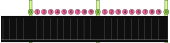
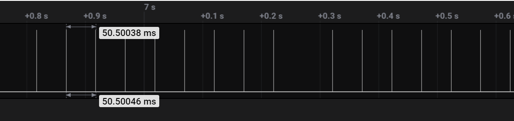
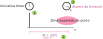

21b - EMB - AV1
- Manter o proctorio aberto o tempo todo!
- A cada 30 minutos você deverá fazer um commit no seu código!
- Códigos que não tiverem commit a cada 30min ou que mudarem drasticamente entre os commits podem ter a entrega anulada.
- Tente inserir mensagens condizentes nos commits!
- Duração total: 3h
Info
Criar o repositório de entrega pelo link:
Usem como base o código disponível neste repositório.
Vocês vão precisar:
- ▶️ Conectar o OLED1 ao EXT-1
Descrição
Vocês irão desenvolver um sensor/ sistema embarcado para leitura da roda fônica de uma injeção eletrônica, esse sensor é um dos muitos existentes em um automóvel.
A roda fônica é um disco com dentes atrelada ao rotor do motor, um sensor magnético faz a leitura dos dentes do disco e gera um sinal elétrico (pulso) conforme os dentes vão passando por ele. Essa informação é utilizada pela injeção eletrônica para:
- Saber a fase atual do motor (ciclo oto)
- Identificar a velocidade de rotação do motor
A imagem a seguir ilustra uma roda fônica de um motor com 60 dentes e 2 faltando.
Info
Notem que na figura a seguir existe um dente da roda "faltando", isso serve para identificar a posição ZERO do disco.

Imagem adaptada de https://www.canaldapeca.com.br/blog/qual-diferenca-entre-distribuidor-e-roda-fonica/
O período dos pulsos indica a velocidade angular do disco e por consequência a velocidade de rotação do motor. A imagem a seguir é um exemplo dos pulsos gerados pelo sensor atrelado a uma roda fônica com 10-1 dentes, neste caso o motor está girando a uma rotação constante. Notem que existe um pulso faltando, isso é por conta do dente "faltando", esse pulso faltando que define o ponto zero.

Vocês terão que desenvolver um sistema embarcado que:
- Calcula a velocidade angula do motor e exibe no LCD.
- Identifica o ponto Zero da roda.
Sistema de testes
Iremos utilizar uma técnica de simulação chamada de Hardware-in-the-loop Simulation (HIL), que de forma simplificada é um sistema que simula em tempo real uma planta/ sinal. No nosso caso, iremos simular a rotação da roda fônica (gerando os pulsos).
Isso será feito no próprio uC que vocês estarão desenvolvendo o sensor, em um sistema mais completo talvez seja necessário uma eletrônica mais sofisticada. O projeto disponível no repositório gera os pulsos simulados de uma roda fônica no pino PD30 do EXT2, para isso utilizamos o timer 2 (TC2), conforme imagem a seguir:
/-----------\
| | TC2 | PD30
| | |-----> | | | | | | | | | | | | | | | |
| ------ | pulsos
| |
| uc |
\-----------/
Warning
- Não usar nenhum canal do TC2!
- Não usar o botão da placa (serve para desacelerar o disco)!
- Não usar o LED da placa (pisco a cada pulso do Zero)!
- Não tirar a função
roda_fonica_initdo main - Não modificar nada nos arquivos
abs.heabs.c
Utilizar os seguintes parâmetros como referência:
| Parâmetro | valor |
|---|---|
| n total de dentes da roda | 10 |
| n de dentes faltando | 1 |
| velocidade de rotação nominal dado roda (passagem pelo zero) | 120 rpm |
| velocidade máxima | 500 rpm |
Tip
- 600 rpm = 600/60 = 10 rotações da roda por segundo
Mas temos que lembrar que teremos 10 pulsos -1 da roda a cada rotacão total, com isso iremos obter uma frequência de pulsos de aproximadamente:
- 10*10 = 90 Hz
Avaliacão
A seguir a rubrica da avaliação.
C
Para obterem o conceito C, vocês devem entregar um firmware que:
Preencher o formulário
https://docs.google.com/forms/d/e/1FAIpQLSd3oTNrgGqiqt2wiommtRfXj2Urx23XGpDZYRgxIxpJBVhi8g/viewform
- Faz a leitura dos pulsos simulados da roda fônica
- Identifica quando a roda passa pela origem.
- Piscar o LED 3 da placa OLED a cada pulso da roda!
- Piscar os LED 1 e LED 2 da placa OLED a cada sinal de referência (Zero)!
- usar
pin_toggler! - Exibe no OLED a velocidade de rotação média da roda em rotações por minuto - rpm (atualizar valor após uma rotação completa)
Vocês devem utilizar um periférico de tempo para calcular o dT entre os pulsos e interrupção no pino para a leitura do sinal gerado no PD30.
B/ A
Os pontos aqui valem apenas se o conceito C foi atingido (todos os itens!).
- (+1.0 conceito) Identifica quando a roda parou de girar e indicar velocidade de rotação: 0 rpm no LCD
- (+0.50 conceito) Organiza o código em funções:
- Cálculo do rpm
- Função para exibir o valor no LCD
- (+0.25 conceito) Só exibe a velocidade uma vez por rotação, quando encontrado
- (+0.50 conceito) Utiliza média móvel para o cálculo do rpm
- (+0.50 conceito) Exibe graficamente a velocidade no LCD.
Dicas
A seguir dicas para realizarem a entrega
Debug
Depurar é importante e ajuda bastante, mas tomem cuidado que os relógios não param de contar quando o programa estiver em "pause".
Terminal + printf
Eu habilitei o terminal para vocês, podem usar printf!. Só cuidado com o uso pois ele é lento e as vezes não podemos perder tempo...
C - Osciloscópio
A imagem a seguir é referente aos pulsos que são gerados no HIL, o tempo entre os pulsos é de 50 ms.
50ms = 20Hz / 10 dentes = 2 rps ou 120 rpm

C - Lendo o sinal
Vocês devem escolher um pino qualquer do uC, configurar como entrada sem pull_up ou debounce (usar PIO_DEFAULT), configurar interrupção e atrelar uma função de callback.
Pisque o LED3 da placa OLED a cada pulso recebido, com isso sabemos que a função está funcionando e é um dos itens da rubrica!
Tip
Usar a função pin_toggle que já foi definida!
- Não usar IT_EDGE
- Não usar debounce
- Não usar PULL_UP
C - Calculando dT
Utilizem o RTT para calcular o tempo entre os pulsos, reiniciando o contador a cada novo pulso.
- Detecta pulso e inicializa contagem de tempo
- Lê o valor do tempo entre um pulso e outro
Como indicado na figura a seguir:

Info
- A função RTT init fornecida não tem o IRQ de incremento! Apenas o alarme.
- Se quiser fazer com o TC também da, mas ai tem que manter um contador global dos pulsos.
Tip
- Utilize 1000 como prescale para o RTT, é um bom valor (eu testei aqui)!
- Imprima no terminal sempre que obtiver um novo valor de dT, lembre de fazer a impressão no main e não dentro do callback!
Vocês devem obter algo como:

Notem que temos um dT com valor 102 ms isso é referente ao pulso faltante, como ilustrado a seguir:
^ ^ ^ ^ ^
| | | | |
| | | | |
51 102 51 51 ms
C - Velocidade angular
Agora com o dT você é capaz de:
- Calcular a velocidade do disco em rps: $w = \frac{1}{dT}$
- Converta de rotações por segundo para rotações por minuto (*60)
- Exiba no LCD a velocidade
Warning
Lembre de não atualizar o LCD dentro de interrupção / callback!
Tip
- Lembre de converter dT para segundos!
- Cuidado com a conversão float/ int/ ...
C - Identificando Zero
Para identificar o dente faltante é necessário "prevermos" quando um pulso deveria acontecer, isso pode ser feito através do alarme do RTT que deve ser configurado utilizando como base o dT calculado do pulso anterior (ou de uma média).

Um cuidado que vocês devem ter é com o valor usado no timeout do RTT, não usar o valor do dT com o dente estimado, usar o último valor válido.

Tip
Definam uma tolerância para o pulso, eu experimentei aqui e 20% é um bom valor! Ou seja, o alarme para o pulso é dT*1.2. Podemos interpretar isso como: se passado 20% do tempo esperado para um pulso sem o recebimento do mesmo, esse slot é do dente faltante.
Lembrem de zerar o RTT quando o pulso faltante for detectado.
Vocês devem obter algo como:
- Eu estou imprimendo um
*toda vez que o pulso zero é detectado.

A/B - Média móvel
A média móvel é um dos filtros mais simples que existe, suavizando o sinal no tempo e removendo ruídos (n), sua ideia é bem simples e vou explicar com um exemplo (filtro de janela 5).
| sinal filtrado
v
y[1] = (x[1] + 0 + 0 + 0 + 0) / 5
y[2] = (x[2] + x[1] + 0 + 0 + 0) / 5
y[3] = (x[3] + x[2] + x[1] + 0 + 0) /5
...
y[5] = (x[4] + x[3] + x[2] + x[1] + x[0]) / 5
y[6] = (x[5] + x[4] + x[3] + x[2] + x[1]) / 5
/
/ ---------------------> shift
Novo dado
Implemente o filtro em C e use para exibir o valor.
Info
Existe uma versão recursiva do filtro onde não é necessário armazenar o buffer e fazer o shift.
A/B - Identifica quando a roda parou de girar e indicar velocidade de rotação: 0 rpm no LCD
O botão da placa foi configurado para iniciar a frenagem do motor, uma vez apertado os pulsos vão se espaçando até parar. Se apertar novamente os pulsos voltam a velocidade padrão.